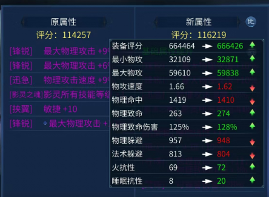

最大最小攻击解析
作者：[德库拉]
在倩女游戏中，人物攻击属性往往是玩家关注的焦点之一。每个人物角色都具备最大攻击和最小攻击两个属性，而实际打怪时，每次攻击的伤害值会在这两个数值之间随机抽取,这种机制增加了游戏的不可预测性和趣味性，但同时也让不少玩家感到困惑：应该优先考虑哪个数值呢？许多玩家往往一味追求最大攻击值，而忽视了最小攻击值的重要性。本文将从统计概率学的角度，通过数学证明，揭示最大攻击与最小攻击在长时间击打中的真实影响。

一、攻击属性的基本概念
角色的攻击属性通常包括基础伤害、攻击速度以及附加的各种伤害加成（如致命几率、致命伤害等）。其中，基础伤害是最重要的属性之一，它决定了每次攻击的基本伤害范围，即最小攻击和最大攻击。
- 最小攻击：表示使用该角色能够造成伤害的下限。
- 最大攻击：表示使用该角色能够造成伤害的上限。
这两个数值共同决定了每次攻击可能造成的伤害范围。例如，如果一个角色拥有最小攻击50点和最大攻击100点，则每次攻击将随机产生介于50到100之间的伤害值。
二、期望攻击的计算
期望攻击，即长时间击打下的平均伤害值，是评估角色伤害的关键指标。对于具有最小攻击Min和最大攻击Max的武器，其期望攻击E可以通过以下公式计算：
E = (Min + Max) / 2
这个公式表明，期望攻击是最小攻击和最大攻击的平均值。
Tip
注意：期望值是指所有可能结果按照其发生的概率加权平均后得到的结果,并不能简单理解为平均数，只不过攻击范围是等差数列，恰好可以精简成上面这种形式
三、最大攻击与最小攻击的影响
许多玩家认为，最大攻击值越高，角色的伤害能力就越强。然而，从统计概率学的角度来看，这并不完全正确。
期望攻击的稳定性：
期望攻击代表了长时间击打下的平均伤害值。因此，无论最大攻击和最小攻击的具体数值如何，只要它们的和保持不变，期望攻击就不会改变。这意味着，在期望攻击相同的情况下，一个具有更高最小攻击和更低最大攻击的角色，与一个具有更低最小攻击和更高最大攻击的角色，在长时间击打下的平均伤害值是相同的。
伤害波动的比较：
虽然期望攻击相同，但不同角色的伤害波动是不同的。一个具有更高最小攻击和更低最大攻击的角色，其伤害波动会更小，即每次攻击的伤害值更接近期望攻击。相反，一个具有更低最小攻击和更高最大攻击的角色，其伤害波动会更大。
从数学角度来看，伤害波动的标准差σ可以通过以下公式计算：
σ = (Max - Min) / (2√3)
这个公式表明，伤害波动的标准差与最小攻击和最大攻击之间的差值成正比。因此，在期望攻击相同的情况下，最小攻击和最大攻击越接近，伤害波动就越小。
四、数学证明与实例分析
为了更直观地说明最大攻击与最小攻击的影响，我们可以通过一个具体的例子来进行数学证明。
假设有两个角色，角色A的最小攻击为100，最大攻击为200；角色B的最小攻击为150，最大攻击为150（即固定伤害）。它们的期望攻击都是150。
期望攻击的计算：
角色A的期望攻击：E_A = (100 + 200) / 2 = 150
角色B的期望攻击：E_B = (150 + 150) / 2 = 150
伤害波动的计算：
角色A的伤害波动标准差：σ_A = (200 - 100) / (2√3) ≈ 28.87
角色B的伤害波动标准差：σ_B = (150 - 150) / (2√3) = 0
从上面的计算可以看出，虽然两个角色的期望攻击相同，但角色A的伤害波动远大于角色B。这意味着在使用武器A时，每次攻击的伤害值会在一个较大的范围内波动，而使用武器B时，每次攻击的伤害值都是固定的。
五、结论与建议
综上所述，从统计概率学的角度来看，最大攻击和最小攻击在长时间击打中的影响是相等的。期望攻击是评估角色伤害的关键指标，而伤害波动则反映了角色伤害的稳定性。因此，在选择装备时，玩家应该综合考虑期望攻击和伤害波动两个因素。 追求高最大攻击固然可以让你偶尔打出非常高的爆发伤害，但对于提高整体输出效率而言，并不是最明智的选择。相反，寻找那些具有较高期望攻击（即最小攻击与最大攻击之和较大且两者差距较小）的装备，才能确保你在战斗中保持稳定而高效的输出。理解这一点可以帮助玩家更好地评估不同装备的价值，从而做出更为合理的选择。